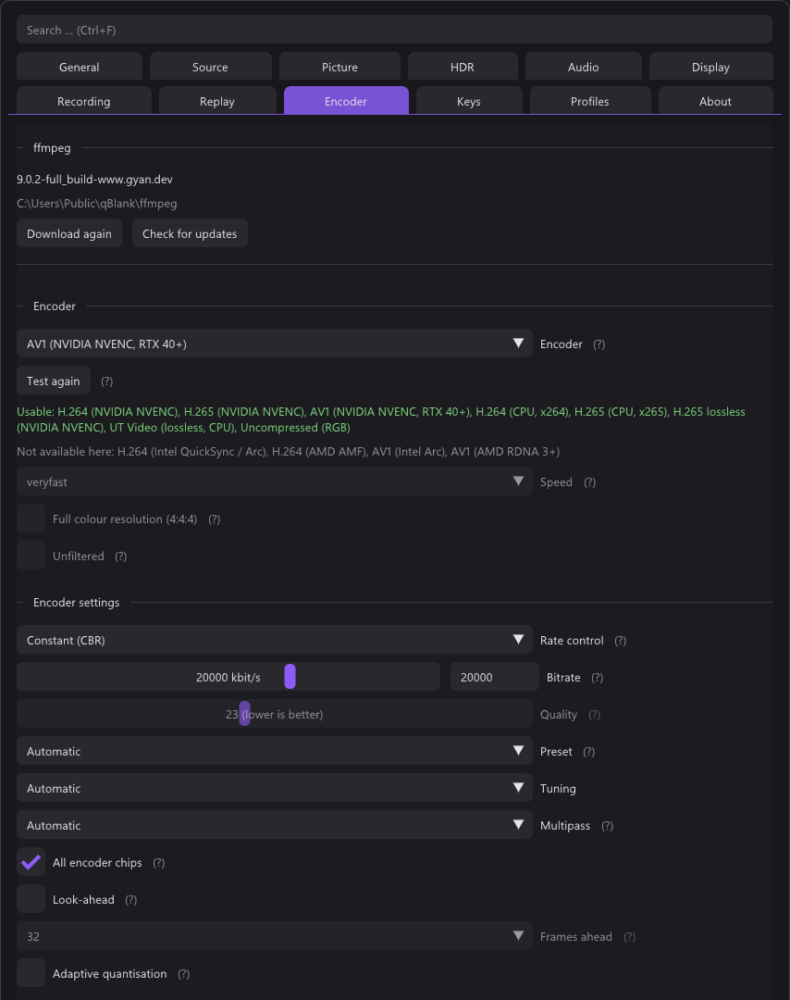

src/record/recorder.cpp, Recorder::EncoderOptions() and PresetName()

Bitrate alone leaves most of an encoder unused. The settings that matter are
exposed under one set of names and translated into each vendor's own, because
what NVIDIA calls p1–p7, Intel calls veryfast–veryslow and AMD calls
three words; and a quality target is qp on one, qp_i on another,
global_quality on a third and crf in software.
They go to the encoder as options when it is opened (avcodec_open2()), as
name and value; the log line at the start of a recording lists them,
rc=vbr preset=p5 …. An option the encoder does not know is not an error, but
it did nothing, so it is logged as ignored.
What each family supports
| NVENC | AMF | Quick Sync | Software | |
|---|---|---|---|---|
| Rate control | CBR, VBR, constant quality | CBR, VBR, constant quality | by which of bitrate or quality is given | CBR, VBR, CRF |
| Preset | seven steps | three, which the seven fold onto | seven steps | seven steps |
| Tuning | quality or low latency | quality or low latency | — | — |
| Look-ahead | yes | yes | yes | — |
| Adaptive quantisation | spatial and temporal | VBAQ | MBBRC | — |
| Multipass | off, quarter, full | — | — | — |
Anything an encoder has no opinion about is greyed out rather than hidden, which says "your card cannot" instead of "qBlank cannot".
Recorder::FamilyOf() maps an ffmpeg encoder name onto one of four families by
suffix — _nvenc, _amf, _qsv, and everything else as software. SVT-AV1
(libsvtav1) is software. H.265 on Quick Sync and AMF (after 7.1.1) uses the
options of H.264 there; it has not run on real Intel or AMD hardware yet.
The lossless encoders take none of these settings: rate control and the rest are greyed out.
Automatic means nothing is passed
Everything defaults to automatic, and automatic means nothing is passed at all. That is not the same as passing the encoder's default, and it is the only honest way to leave something alone: encoder defaults change between ffmpeg builds and between driver versions, and hardcoding today's default would silently pin behaviour that was never asked for.
PresetName() returns nullptr for EncoderPreset::Auto, and the caller emits
nothing.
Rate control
case Family::Nvenc:
pair("rc", cbr ? "cbr" : vbr ? "vbr" : "constqp");
if (quality) pair("qp", qp);
case Family::Amf:
pair("rc", cbr ? "cbr" : vbr ? "vbr_peak" : "cqp");
if (quality) { pair("qp_i", qp); pair("qp_p", qp); }
case Family::Qsv:
if (quality) pair("global_quality", qualityLevel); // no rc at all
default:
if (quality) pair("crf", qualityLevel);
if (svtav1 && cbr) pair("svtav1-params", "rtc=1");
if (svtav1 && vbr) pair("maxrate", "0");Quick Sync has no rc: what it does follows from which of bitrate or quality
it is given.
The bitrate side is set on the encoder's context in Open():
const int64_t ceiling = cbr ? kbps : kbps * 3 / 2;
v->bit_rate = kbps * 1000;
v->rc_max_rate = ceiling * 1000;
v->rc_buffer_size = ceiling * 2000;Constant bitrate means constant — the ceiling is the bitrate. Variable is allowed to peak at half again, which is what makes it worth choosing over CBR at all.
Constant quality sends no bitrate (bit_rate = 0). A quality target and a
bitrate are contradictory instructions and the encoders resolve them by quietly
ignoring one; better to send only one.
SVT-AV1: constant only in real time
SVT-AV1 takes a ceiling only with crf, so variable goes without one
(maxrate=0). Constant it refuses in its normal structure (random access) and
quietly ran as variable up to 7.1. It holds constant only in its real-time mode
(rtc=1), and that mode is made for presets 10 to 12. Measured with ffmpeg at
1080p60 on 16 threads, noisy picture:
| Preset | Real time, CBR | Random access, VBR |
|---|---|---|
| 12 | 91 fps | — |
| 11 | 90 fps | — |
| 10 | 73 fps | 141 fps |
| 9 | 62 fps | 111 fps |
| 8 | 26 fps | 83 fps |
So constant goes in real time, with its own presets (see below). At 6000 kbit/s every second lands between 5850 and 6300; on easy pictures it stays under, as there is no padding. It costs little picture: PSNR 32.00 against 32.12 dB at 6000 kbit/s, 31.79 against 32.03 at 3000. In qBlank at 1080p60 the default left out no frame, the slowest step one on a keyframe; 10-bit works the same. The settings say so under the rate control.
One quality scale for every encoder
The level is the number crf takes in software, and the hardware encoders get
the same meaning in their own terms:
- NVENC listens to
qp. Up to 6.0 it was handedcq, which belongs tovbrand whichconstqpignores: every quality level gave the same file. Measured since, HEVC at 15 against 40: 38 against 25 kB, colour error a third. - AV1 in hardware counts to 255, against 63 for the software AV1 encoders'
crf. Four of one are one of the other, so NVENC and AMF get the level times four (av1_in the name) and it means the same whichever AV1 encoder it goes to.
Both numbers sit under the setting that decides between them
Bitrate used to live in the Recording tab and quality here, which made a pair of settings unreadable: at constant quality the encoder ignores the bitrate entirely, and the slider for it was one tab away, fully operable and doing nothing at all.
Both are now directly under the rate control combo, and whichever does not apply is greyed out rather than hidden — the same argument as everywhere else on this page. Greyed out says "not in effect here"; hidden says nothing, and makes the page jump as well. The help marker on the disabled one says which setting takes over.
The bitrate slider is logarithmic. Its range is 1000 to 100000 kbit/s, and laid out linearly the part a card like this actually lands in — 1 to 10 Mbit — took nine percent of the track, with the other ninety percent reserved for hardware that is not in the machine. Logarithmic gives the used range half the track. Next to it is a number field, because a slider gets close and this is a number people often want exactly; Ctrl+click on the slider does the same thing, but nobody finds that who is not told. Both are clamped to the same range.
Preset
Seven steps, 0 fastest to 6 slowest.
| Step | NVENC | Quick Sync | Software | AMF | SVT-AV1 | SVT-AV1 constant |
|---|---|---|---|---|---|---|
| 0 | p1 | veryfast | ultrafast | speed | 9 | 12 |
| 1 | p2 | faster | veryfast | speed | 8 | 12 |
| 2 | p3 | fast | faster | balanced | 7 | 11 |
| 3 | p4 | medium | medium | balanced | 6 | 11 |
| 4 | p5 | slow | slow | quality | 5 | 10 |
| 5 | p6 | slower | slower | quality | 4 | 10 |
| 6 | p7 | veryslow | veryslow | quality | 3 | 9 |
AMF has three names, so the seven steps fold onto them. AMF also spells the
option quality rather than preset.
SVT-AV1 numbers its presets, lower is slower. 10 and up warn of artefacts
outside its real-time mode, 12 is the same as 11, so the fastest step is 9.
Measured with ffmpeg at 1080p60 on 16 threads: 9 at 128 fps, 8 at 101, 7 at 68;
x265 veryfast at 82 for comparison. Constant runs in real time, which falls
under 60 fps below 10, so there the seven steps fold onto 12 to 9.
The old speed setting
Software encoders had a speed setting before presets existed. It still applies,
but only when the new preset is left on automatic:
if (const char* preset = PresetName(family, settings.preset)) {
pair(family == Family::Amf ? "quality" : "preset", preset);
} else if (family == Family::Software) {
pair("preset", RecordSpeedName((int)settings.speed));
}Nobody's existing configuration changes meaning. For SVT-AV1 the speed setting
takes the same steps as the table, ultrafast to medium being 9 to 5; the
default veryfast is 8, or 12 for constant.
Tuning
| Quality | Low latency | |
|---|---|---|
| NVENC | tune=hq | tune=ll |
| AMF | usage=transcoding | usage=lowlatency |
Nothing for Quick Sync or software.
Look-ahead
| NVENC | rc-lookahead= 8, 16, 24 or 32 |
| Quick Sync, H.264 | look_ahead=1 |
| Quick Sync, H.265 and AV1 | extbrc=1 look_ahead_depth= 8, 16, 24 or 32 |
| AMF | preanalysis=1 |
Up to 7.1.1 Quick Sync got look_ahead=1 for AV1 as well. av1_qsv has no
such option, so look-ahead did nothing there.
Look-ahead lets the encoder see future frames before deciding how to spend bits on the current one. It costs latency inside the encoder, which does not matter here — the recording is already a couple of frames behind the screen and the screen is not affected.
Frames ahead
NVENC since 7.1, before that the depth was always 32; Quick Sync with H.265 and AV1 after 7.1.1. Frames ahead picks 8, 16, 24 or 32, greyed out while look-ahead is off. A value from a hand-edited file is rounded up to the next eight.
The frames are memory. Measured with ffmpeg on AV1 at 1440p, p7, AQ and full-resolution multipass, peak private bytes:
| Frames ahead | 0 | 8 | 16 | 24 | 32 |
|---|---|---|---|---|---|
| MB | 778 | 780 | 825 | 950 | 1072 |
About 15 MB per frame over 8. What the extra frames buy in quality has not been measured.
All encoder chips
split_encode_mode=forced, NVENC with H.265 and AV1, since 7.0, off by
default. Larger cards carry more than one NVENC; a frame normally goes to one
of them. With All encoder chips the driver cuts each frame into one strip
per chip.
Measured on an RTX 4080, AV1 at 1440p, preset p7: 110 → 183 fps. At the same data rate a little less quality, at the strip edges. No effect with one chip; greyed out for H.264, which cannot be split.
Adaptive quantisation
Spending bits where the eye looks rather than evenly across the frame.
| NVENC | spatial-aq=1 temporal-aq=1 |
| AMF | vbaq=1 |
| Quick Sync | mbbrc=1 |
Multipass
NVENC only.
| Off | multipass=disabled |
| Quarter resolution | multipass=qres |
| Full resolution | multipass=fullres |
What is deliberately left alone
Keyframe interval and B-frames. Both are left to the encoder. The encoders' own defaults are sensible for a recording that will be played back linearly, and exposing them would mean explaining GOP structure in a settings tab to solve a problem nobody recording gameplay actually has.
Pixel format
4:2:0 by default: nv12 for SDR, the one format every hardware encoder and every
player agrees on, and ten bits when the recording keeps the HDR range, with the
three colour description flags. See High dynamic range.
Full colour resolution (4:4:4), since 6.1 (record.fullChroma, off by
default), keeps a colour sample for every pixel. 4:2:0 keeps one per four, which
is fine for a camera and loses detail on an HDMI or RGB source: coloured text and
pixel edges smear by a pixel. Measured against the screenshot of the same frame,
the colour error on coloured pixels drops to about a fifth. Latency and CPU are
unchanged; the conversion is the same pass on the GPU.
| Encoder | 8 bit | 10 bit (HDR) |
|---|---|---|
| NVENC H.264 | yes | — |
| NVENC HEVC | yes | yes |
| x264, x265 | yes | yes |
| Quick Sync, AMF, all AV1 | — | — |
That is what the encoder probe tests, per machine. An encoder that cannot greys the switch out; one that can only at eight bits records HDR in 4:2:0 and the tab says so. A recording started with the switch on that ends up in 4:2:0 anyway says so in a toast.
The price is elsewhere: larger files, and browsers, phones and most editors cannot play 4:4:4. VLC and mpv can. x265 at 4:4:4 on a slow preset is too much for most CPUs.